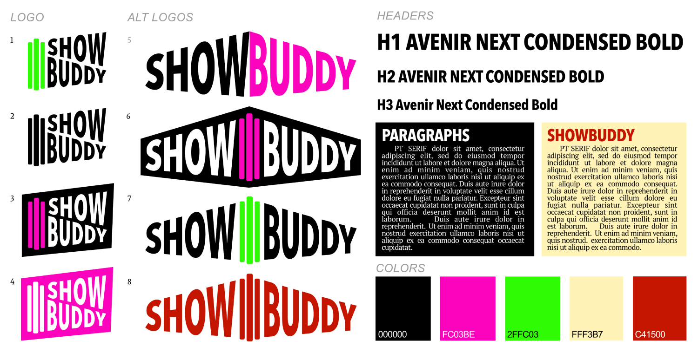
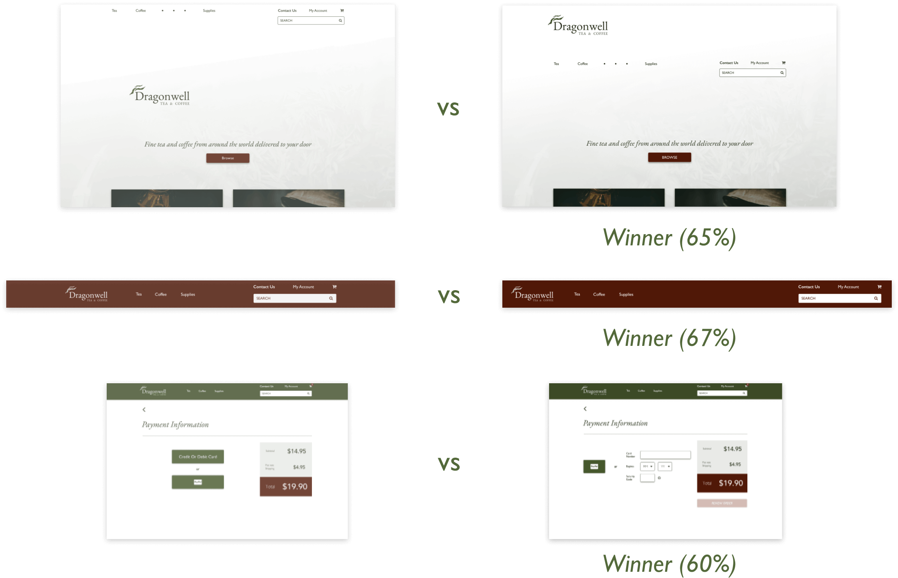

The Challenge
My main goal was to eliminate the excess confusion and complexity that typically goes into finding concerts and performances to attend, particularly on a somewhat more casual or spontaneous basis. So often, prospective concertgoers need to search multiple websites to get a sense of what’s happening in their city or region. This process is tedious and messy, typically leading to frustration and missed opportunities. Wouldn’t it be nice if show finding was less like feeling around in the dark and more like having a bird’s eye view?
The Solution
ShowBuddy is a relatively simple app that relieves users’ sense of being overwhelmed by the concert searching process. The key is to have an onboarding process with only two steps, setting one’s location and radius, and then how far in the future (or within what date range) one is looking for shows. ShowBuddy then presents the user with a list of concerts based on these preferences. Users can scroll through a list or toggle to a map view with pins for each show. A search icon allows for precise searching by artists, venues, or styles. Within this nonlinear search interface, users can explore by tapping event list items or map pins for additional details.
Click to view InVision prototype
;lakdf;alkfg;lsfdkgns;fkldgnd;aflkgn

kasdjfaslkjfsa;kdfj

asdkfa;lkfjadls;kfja;kfa
The Process
Creating ShowBuddy started with a survey to get a sense of wider user habits regarding concert finding and going. It revealed a surprising breadth of musical interests and clear complaints regarding existing means of search. Given the organic, informal means that users often like to employ, such as social media and word of mouth, the ideal app might combine these natural, self-directed, exploratory approaches with an app that helps organize multiple information sources in one clear place.
Given major competitors like social media and especially the Bandsintown app, ease and simplicity combined with some level of personalization would likely make or break ShowBuddy’s success.

dsfdsfdsfdsfs. The website sdflsdkf
The creation of personas helped make the needs of users more fully human. Further brainstorming through user stories and user flows clarified what exact features and screens would ultimately need building before getting into the actual visual design phase.

Sample persona based on actual user survey feedback expressing a need for filtering out 21+ shows. Click here to open all three personas as a PDF file in a new tab.
Branding & Visual Design
As ShowBuddy moved farther along the design process, I developed a brand aesthetic based on the bold, bright aesthetic of vintage neon theater signs.
Thanks to sketching, a logo quickly came together. While the wide marquee look was a fun start, an experimental transposition of it in Sketch revealed the final version that was more conveniently square but still featuring the neon light shape. From here, the neon color scheme is an obvious inclination, with neon green a good complement to the pink. A black background with bold white text evoked the feeling of rock concert posters. I arrived at the Avenir Next Condensed Bold typeface when searching for something comparable to the interchangable plastic lettering of old backlit signs.

Here is my initial style guide that features the neon color scheme with a secondary more refined color scheme (perhaps for classical concertgoers) and typeface. These other ideas turned out to be less compatible given the clarity and consistency requirements of a mobile app.
Next began the wireframing stage, which brought to light numerous issues regarding basics like proper sizing of fonts as well as clickability of category labels and header menu usability. User testing feedback at this stage regarding menu and button clarity informed the subsequent interface design.
Moving into the full mockup stage, a series of A / B tests on UsabilityHub influenced elements of the layout, allowing potential users to choose between alternative hero layouts, header spacings, and payment approaches. Here are those examples:

Creating the mockups required discernment in applying color and ample effort to enhance the design with images in a refined way. Through further user testing, the header product menu became more clear for users hovering, and category limiting buttons more obviously clickable. One user recommended the removal of a superfluous call to action on the home page and a tightening of still very open whitespace. Background images of coffee beans and tea leaves filled in nicely but were too zoomed in and obstrusive on the coffee page, impeding browsing by requiring extra scrolling. This particular user also recommended improvements to the layout of the category buttons. Another user thought the search bars were too commanding so I made them blend in more to the background while keeping them prominently accessible for the users who would surely want them for a quick and precise experience. See examples below:
Conclusion
Creating Dragonwell Tea & Coffee proved to be a formidable challenge, given the complexity of something as previously unassuming as an online tea and coffee shop. The slow and steady process of research and testing, however, made my purpose increasingly clear. Thanks to repetitions in the wireframing, mockup, and prototyping stages, a respectable design came into view that should begin to be worthy of most tea and coffee drinkers. It meets their needs in terms of overall navigational clarity, product detail, and visual enjoyment.
Through this process, I learned the importance of testing, and, indeed, the pleasure of it. As a user-centered designer, I’m thankful to not have to make too many “shots in the dark”, but rather come up with a couple design ideas and consult potential users on what would be most usable and/or visually agreeable before proceeding. Soliciting comments on my A/B tests allowed for especially valuable insights. I would have liked to have done much more of this testing throughout the process, and particularly more sketching and brainstorming early on.
Designer John Maeda in his DesignInTech reports helpfully distinguishes “classical designers”, who are an authority in creating what is “perfect, crafted, and complete”, from “computational designers”, who employ design thinking in service of work that is never complete and always open to fresh analysis and further testing in a constantly changing world. While I need to move on to new things for now, as a member of the latter category of designers, I know Dragonwell is far from and truly never “final.” I also see that throughout its creation, I could have opened any number of elements and assumptions up to testing earlier and more constantly during the process. In this way, I would have merely skillfully facilitated the creation of an authentically and deeply user-centered product that steadily emerged almost of its own accord, as free as possible of unexamined assumptions.
Click to view InVision prototype
Back to top